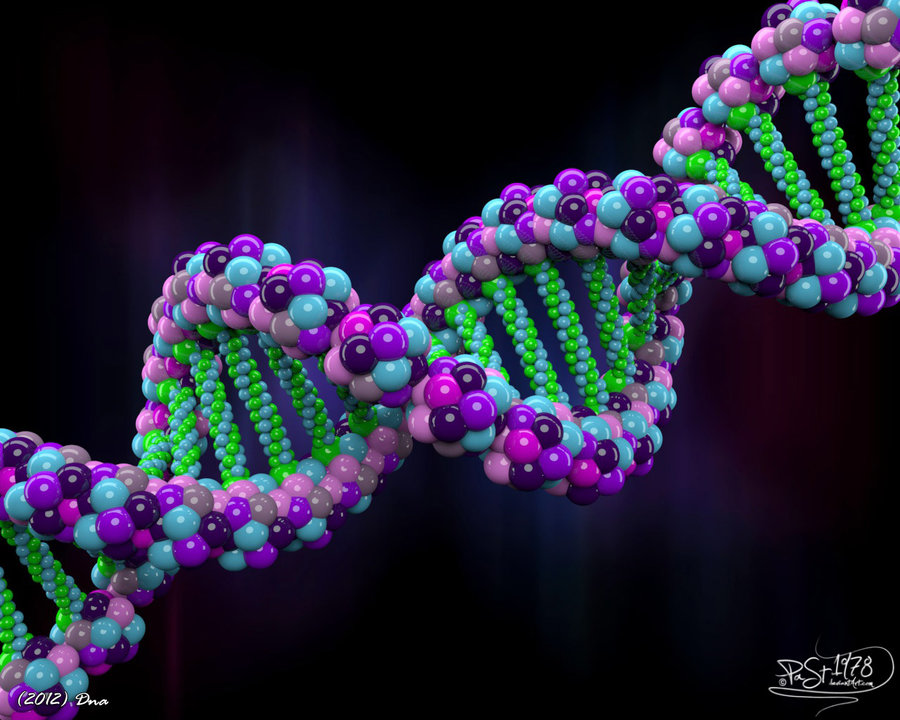
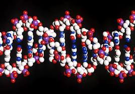

|
Una nuova tecnica permette di attivare, disattivare o sostituire geni con grande precisione e facilità . Questa specie di nanochirurgia genetica, denominata CRISPR (da Clustered Regularly Interspaced Short Palindromic Repeats), é resa possibile da un "nanobisturi" scoperto di recente: si tratta di una proteina batterica denominata Cas9, accoppiata a una sequenza di RNA. |
|  |  |
 |